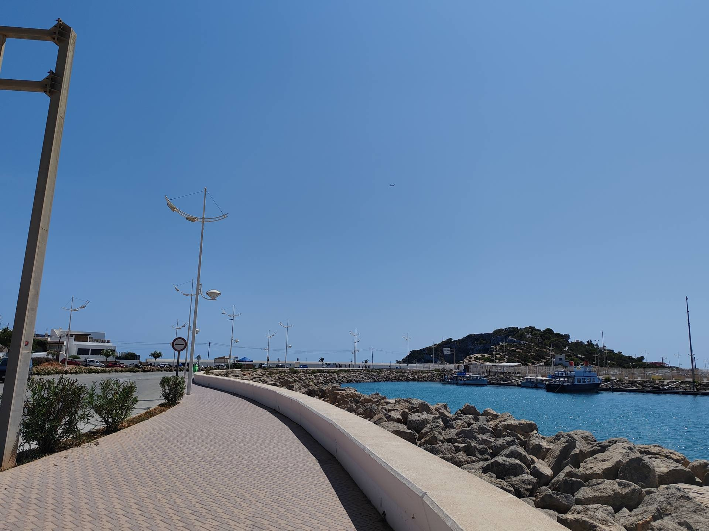
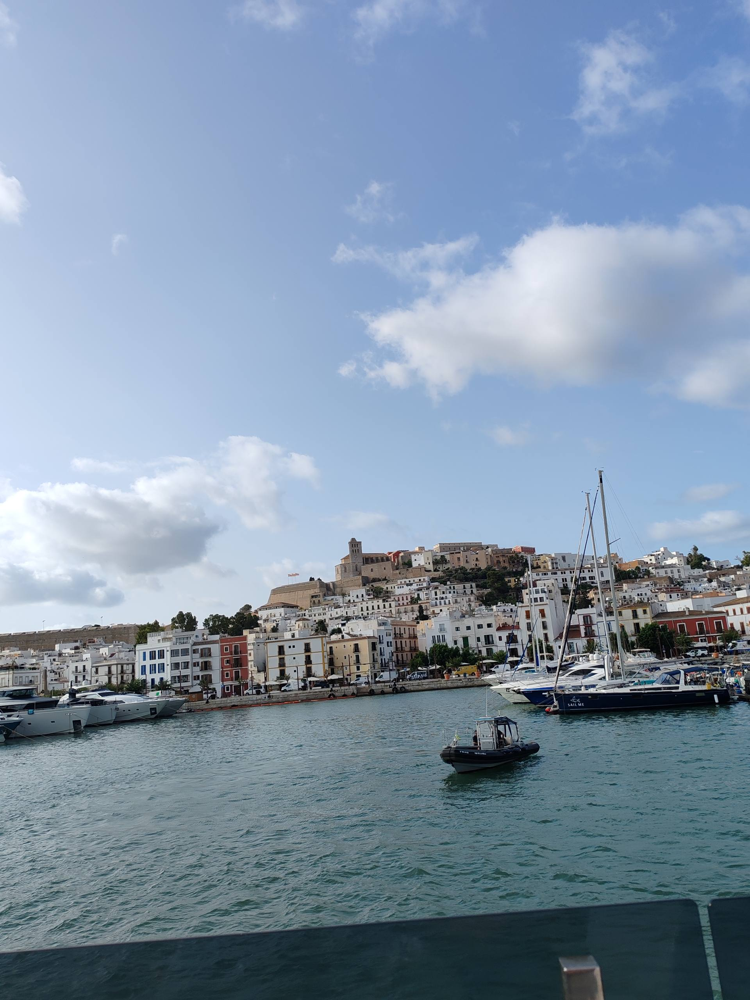
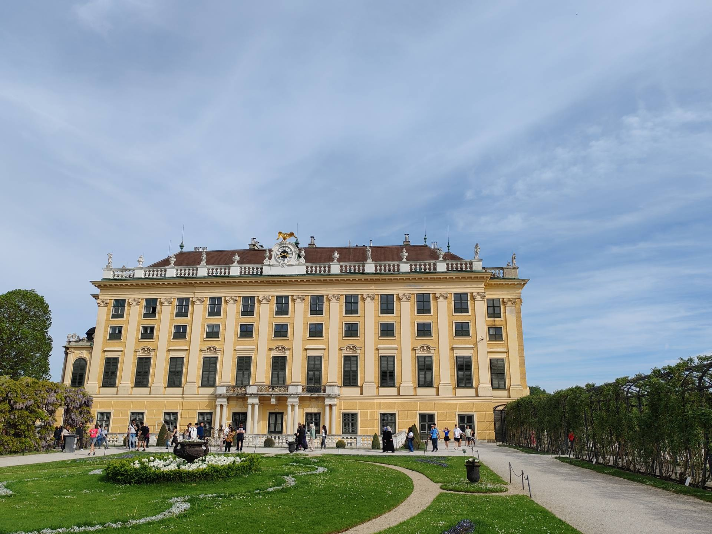
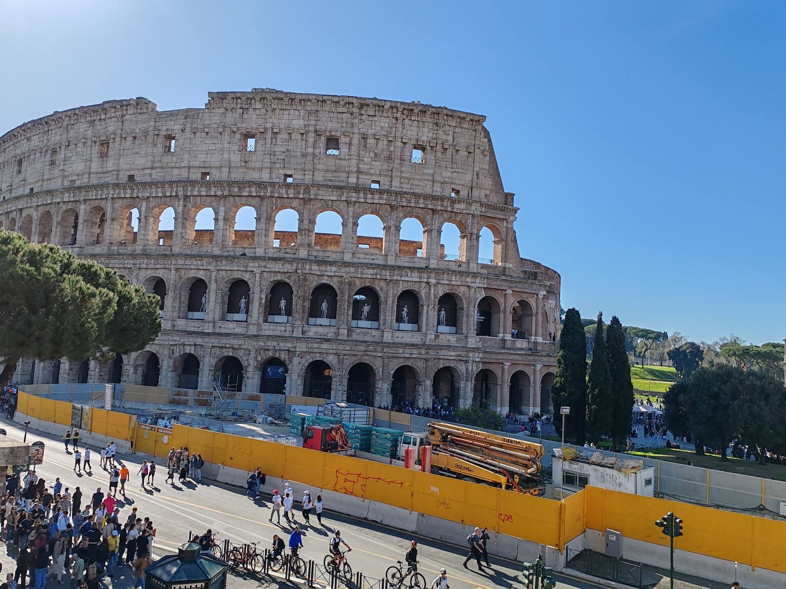
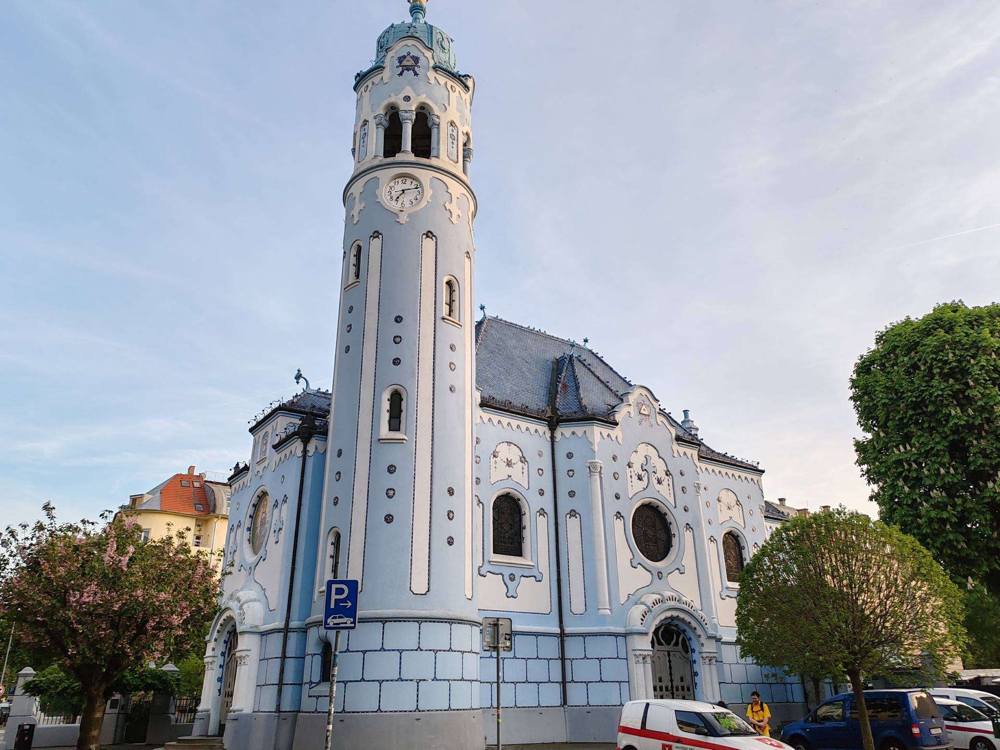
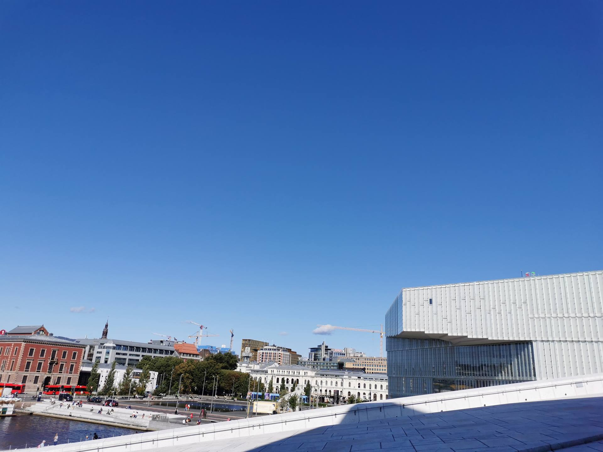
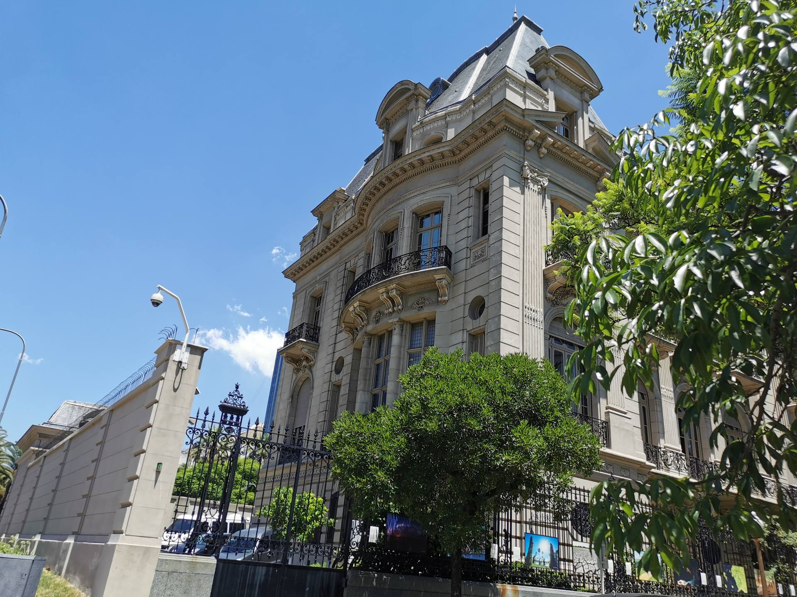

38.909°N · 1.437°EPort d'Ibiza
J'ai visité le magnifique port d'Ibiza et ses paysages côtiers enchanteurs.
Carnet de route
J'ai eu la chance de visiter 18 pays sur 3 continents. Chaque continent a sa couleur sur la carte ci-dessous.
Voici quelques-unes de mes destinations préférées.

38.909°N · 1.437°EJ'ai visité le magnifique port d'Ibiza et ses paysages côtiers enchanteurs.

38.907°N · 1.436°EExploration du centre historique d'Ibiza avec ses ruelles pittoresques et son charme authentique.
Architecture impressionnante du Parlement autrichien, symbole de la beauté viennoise.

48.185°N · 16.312°EVisite du majestueux château de Schönbrunn et de ses magnifiques jardins.

41.890°N · 12.492°EDécouverte des monuments historiques et de la richesse culturelle de Rome.

48.144°N · 17.117°EJoyau de l'Art Nouveau, l'Église Sainte-Élisabeth de Bratislava — surnommée "l'Église Bleue" — séduit par sa façade d'un bleu pastel unique, ses ornements en céramique et sa tour d'horloge élancée. Construite en 1913, elle est l'un des monuments les plus emblématiques et photographiés de la capitale slovaque.

59.908°N · 10.753°EChef-d'œuvre de l'architecture contemporaine, l'Opéra d'Oslo s'avance sur les eaux du fjord tel un iceberg de marbre blanc. Inauguré en 2008, il offre depuis son toit accessible une vue panoramique imprenable sur la ville et son port, mêlant art, modernité et nature scandinave.

34.592°S · 58.378°WFace au Palais San Martín, cette demeure de style Beaux-Arts aux balcons en fer forgé et aux ornements sculptés incarne l'élégance française au cœur de Buenos Aires. Un symbole architectural remarquable qui rappelle les liens historiques forts entre la France et l'Argentine.
Mes voyages m'ont permis d'élargir mes horizons, de découvrir différentes cultures et de créer des souvenirs inoubliables sur 3 continents.